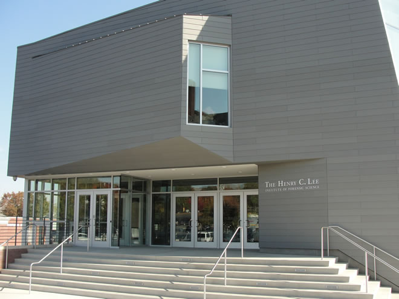

Internship
Home
Contact
Education

I am a soon to be senior at the University of New Haven. I am a forensic science students in The Henry C. Lee College of Criminal Justice and Forensic Science.I am working towards a Bachelor of Science in Forensic Science with a concentration in Biology. My time at University of New Haven has helped me to realize that there is a lot that I don't know about when it comes to forensics and biology. The courses I have taken so far have helped me to realize that I have chosen the right field for me. I am looking forward to graduating in May 2020 and to finally work in my dream field.